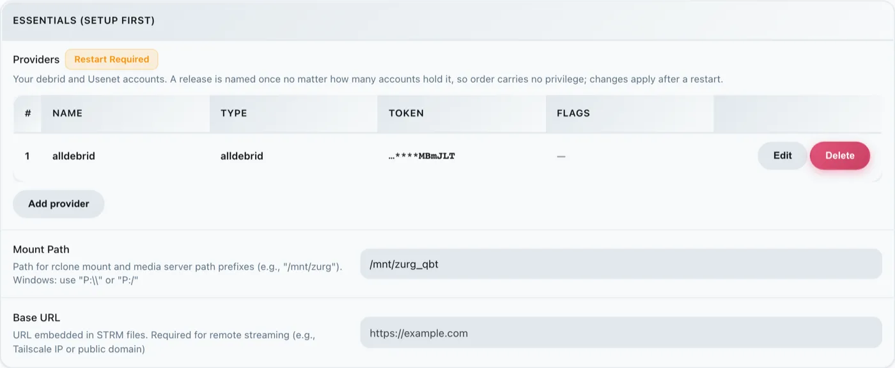
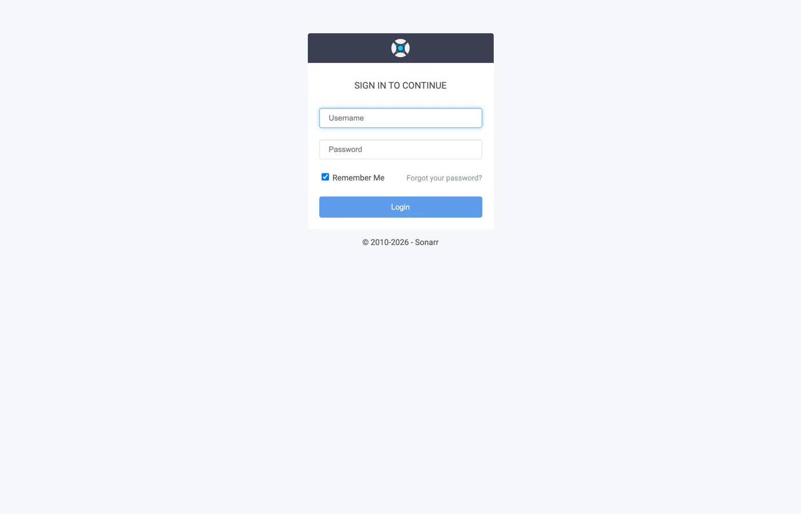
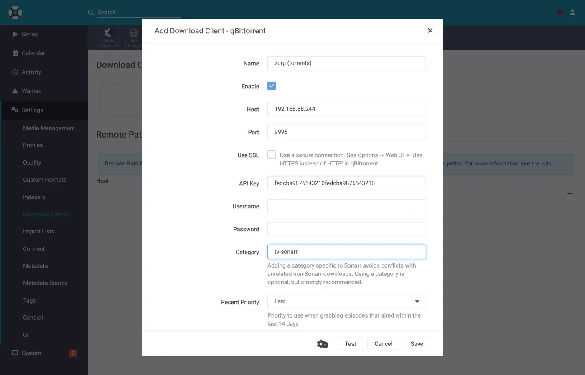
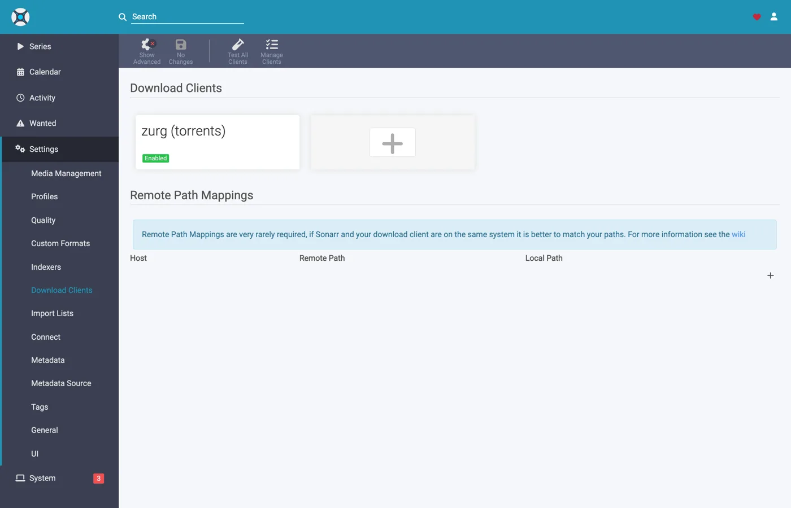
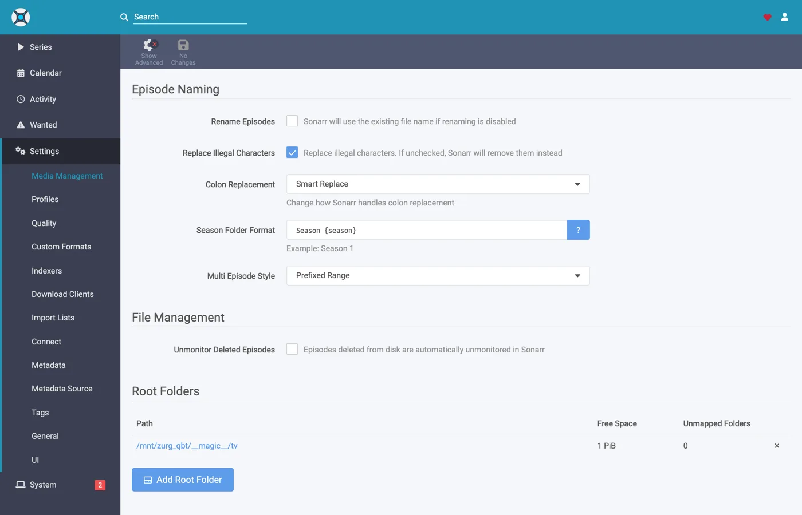
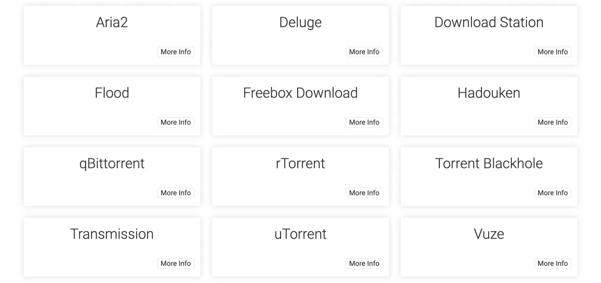

Sonarr und Radarr mit Torrents, Schritt für Schritt
Es gibt drei Wege, Sonarr und Radarr mit zurg zu nutzen. Die eigentliche Frage ist, wer sucht: zurg oder die *arrs. Welche Variante du nimmst erklärt der Vergleich.
Die ersten beiden können parallel laufen. Sie teilen sich denselben Ordner __magic__.
Die vorherige Anleitung hat die *arrs für Usenet auf zurg gerichtet, wobei zurg als SABnzbd antwortet. Das hier ist die andere Hälfte: zurg antwortet als qBittorrent, die *arrs geben ihm einen Magnet-Link oder eine .torrent-Datei statt einer NZB, und das Release landet auf einem Debrid-Konto statt auf einem News-Server. Der Import funktioniert genauso: ein Umbenennen innerhalb von __magic__, nichts wird zum Importieren heruntergeladen, nichts wird kopiert.
Welche der beiden Varianten der *arr schickt, ist nicht nebensächlich. Eine .torrent-Datei wird normalerweise als Datei selbst auf das Konto hochgeladen; nur ein Magnet wird allein über den Info-Hash hinzugefügt. Im Modus nur gecachte Releases (cached-only, der Standard) schicken TorBox und Debrid-Link stattdessen den Info-Hash, denn so lehnen sie ein nicht gecachtes Release ab, ohne es hinzuzufügen. Bei einem Magnet muss das Konto anhand des Hashes herausfinden, was der Torrent enthält, und der Hash eines privaten Trackers hat keinen öffentlichen Schwarm, aus dem sich das ableiten ließe. Real-Debrid bricht dann mit magnet_error ohne Dateien ab, und TorBox nimmt den Magnet an und bleibt bei checking hängen, ohne Dateiliste, ohne Größe und mit einer Schätzung von hundert Tagen. Der Grab schlägt also nicht fehl, wird aber auch nie fertig. Die .torrent-Datei lässt die Cache-Abfrage des Kontos direkt über den Hash laufen, sodass Inhalte, die das Konto bereits hat, sofort hinzugefügt werden, ganz ohne Magnet-Auflösung. Genau deshalb funktionieren private Indexer hier: Ihre Releases lassen sich genau dann hinzufügen, wenn das Konto den Inhalt schon hat, und bei allem, was eine Community teilt, ist das der Normalfall. Richte die *arr auf einen Indexer, der .torrent-Dateien statt Magnets ausgibt. Private tun das.
Alles Folgende wurde mit zurg 2026.08.30.0459-nightly-73-g5b4c9790, Sonarr 4.0.19.2979, Radarr 6.3.0.10514 und Prowlarr 2.5.2.5491 auf einer echten Installation mit einem echten AllDebrid-Konto aufgenommen. Host- und Benutzernamen wurden zu you@zurg-server geändert. Indexer-Namen lauten my-indexer. API-Schlüssel und Bibliotheksanzahlen sind nur Beispiele. Sonst wurde an der aufgenommenen Ausgabe nichts verändert.
Bevor du anfängst
Drei Dinge müssen zutreffen. Prüfe alle drei jetzt, denn jedes davon führt später zu einem Fehler, der nach etwas ganz anderem aussieht.
- zurg hat ein Konto, das Torrents hinzufügen kann: Real-Debrid, AllDebrid, TorBox, Premiumize, Debrid-Link oder Offcloud. Alle sechs nehmen die hochgeladene
.torrent-Datei selbst an. Dadurch lässt sich das Release eines privaten Trackers überhaupt hinzufügen. Ein Usenet-Konto nimmt einen Torrent in keiner der beiden Formen an: Eine Installation, deren einziger Providernzbist, akzeptiert jeden Grab und lehnt ihn danach ab. zurg sagt das beim Start. magic.enabledisttrue. Ohne diese Einstellung existiert der Speicherpfad nicht, und jeder Import schlägt fehl. Siehe__magic__.- Der Mount ist für den *arr unter dem Pfad sichtbar, den zurg meldet. Läuft der *arr in einem Container, lies vor dem Konfigurieren
Schritt 8 . Ist er als normale App auf demselben Rechner installiert, sieht er den Mount dort, wo zurg ihn einhängt, mit je einer Besonderheit pro System:- Linux: Ein *arr, der unter einem anderen Benutzer läuft als zurg, sieht einen leeren Ordner, bis
user_allow_otheraktiviert ist. Siehe Linux-Einrichtung. - macOS: Lass ihn unter demselben Benutzer laufen wie zurg. Der Mount ist
/Volumes/Zurg, sofern dumount_pathnicht geändert hast. - Windows: Lass Sonarr und Radarr als Tray-App laufen, die ihr Installer anbietet, nicht als Windows-Dienst. Das Laufwerk
Z:von zurg gehört zu der Sitzung, in der du angemeldet bist. Ein Dienst läuft außerhalb davon und sieht das Laufwerk deshalb nicht. Siehe die Sitzungsregeln.
- Linux: Ein *arr, der unter einem anderen Benutzer läuft als zurg, sieht einen leeren Ordner, bis
Prüfe die ersten beiden direkt in der Konfigurationsdatei im Arbeitsverzeichnis von zurg. Unter Windows öffnest du stattdessen config.yml in Notepad.
$ grep -A3 '^providers:' config.yml
providers:
- type: alldebrid
token: <redacted>
$ grep -A3 '^magic:' config.yml
magic:
enabled: true
allow_delete: falseDie Reihenfolge der providers:-Liste ist hier wichtig. Ein Grab wird jedem Konto angeboten, das Torrents annimmt, und zwar in dieser Reihenfolge. Lehnt ein Konto ihn ab oder hängt es daran, wird es aufgegeben und das nächste probiert. Hast du zwei Konten, setze an die erste Stelle das, das du zuerst nutzen willst.
Zwei Schlüssel nehmen ein Konto aus dieser Reihenfolge heraus. watchlist: true stellt ein Konto an die erste Stelle, egal wo es in der Datei steht. add_torrents: false nimmt es ganz aus der Rotation. Es liefert und liest seine Bibliothek weiter, aber es wird nie etwas Neues darauf gelegt, etwa bei einem Archivkonto oder einem Konto, dessen Kontingent schon verplant ist. Ein Usenet-Konto bekommt auf keinem der beiden Wege einen Torrent angeboten. Beides steht in der Konfigurationsreferenz.
1. Den Endpoint einschalten
Zwei Wege, gleiches Ergebnis. Beide schreiben in config.yml, und beide brauchen einen Neustart: Die Routen, die __magic__ ausliefern, und der qBittorrent-Endpoint werden nur einmal registriert, wenn zurg startet.
Option A — das Dashboard
Öffne das zurg-Dashboard, klicke auf Config und scrolle zu __magic__ & Download Clients. Aktiviere Serve __magic__ und qBittorrent Endpoint.

Config ist der Ort, an dem die Einstellung liegt. Magic ist der Ort, an dem du später die eingehenden Grabs beobachtest.

Lass qBittorrent Save Path leer, außer dein *arr hängt zurg an einem anderen Pfad ein als zurg selbst. Dann siehe
Option B — config.yml
Füge den Block von Hand hinzu und starte zurg neu.
magic:
enabled: true
qbittorrent:
enabled: true
api_key: "" # empty = zurg generates one and keeps it
categories: [tv-sonarr, radarr]
save_path: "" # empty = <mount_path>/__magic__/__all__
cached_only: true # the default: only take what an account already holdsDie Kategorien sind keine Ordner. Sie zeigen alle auf denselben Ort: den eigenen Ordner der Veröffentlichung unter __magic__/__all__. Die Liste legt Kategorien nur im Voraus an: Ein Test eines Clients legt jede fehlende Kategorie an, und zurg speichert sie in data/qbittorrent-categories.json. Prowlarr will, falls du es nutzt, prowlarr – siehe
Starte zurg neu und prüfe dann, ob der Endpunkt registriert wurde und der Anbieter übernommen wurde:

Eine alldebrid-Zeile reicht dem Endpunkt – jeder der sechs torrent-fähigen Typen funktioniert.
Das Startprotokoll sagt dasselbe, und es lohnt sich, es einmal durchzulesen:
INFO router.qbittorrent qBittorrent API on /api/v2 and /qbittorrent/api/v2, save path /mnt/zurg_qbt/__magic__/__all__, categories tv-sonarr, radarr
INFO router.qbittorrent qBittorrent: cached-only, so a grab is only accepted onto an account that already holds the content; anything else is refused and the *arr takes its next release. Set qbittorrent.cached_only: false to let accounts download
INFO router.qbittorrent qBittorrent: torrents are offered to alldebrid, in that order2. Den API-Schlüssel finden
Der API-Key ist die gesamte Authentifizierung für diesen Endpunkt. Hol ihn dir also einmal richtig und veröffentliche ihn nirgendwo.
Wenn du api_key leer gelassen hast, hat zurg beim ersten Start einen erzeugt und in data/qbittorrent-apikey geschrieben:
$ cat data/qbittorrent-apikey
fedcba9876543210fedcba9876543210
Beispielhafter Key, deiner wird anders aussehen. Die Datei bleibt auch nach Neustarts erhalten, der Key bleibt also gleich, sobald er erzeugt wurde.
Wenn du api_key selbst gesetzt hast, steht er in config.yml, und es wird keine Datei geschrieben.
Dieser Endpunkt liegt außerhalb der Basic-Auth von zurg. Die *arrs melden sich bei einem Download-Client auf dessen eigene Weise an. Ihre HTTP-Schicht macht aus einem Basic-Auth-401 aber nur „unable to connect“, ohne jeden brauchbaren Hinweis. Deshalb nimmt zurg /api/v2 bewusst davon aus. Der API-Key ist die einzige Sperre. Behandle den Port wie den Rest von zurg: nur in einem vertrauenswürdigen Netzwerk oder hinter etwas, das ihn schützt.
Es gibt drei Möglichkeiten, den Key zu übergeben. Alle werden akzeptiert:
Authorization: Bearer <key>: Das sendet der Client, wenn du sein Feld API Key ausfüllst. Das ist die empfohlene Variante, weil sie die Anmeldung komplett überspringt.- Der Key als Passwort bei
auth/login, mit einem beliebigen Benutzernamen. Nimm das, wenn du lieber die Felder Username und Password ausfüllst. - Benutzername und Passwort des zurg-Dashboards, falls
username:undpassword:inconfig.ymlgesetzt sind.
3. Prüfen, ob er antwortet
Mach das, bevor du Sonarr anfasst. Zehn Sekunden, und danach weißt du für den Rest der Einrichtung, ob zurg das Problem ist oder der *arr.
$ KEY=fedcba9876543210fedcba9876543210
$ ZURG=192.168.88.244:9995
$ curl -s "http://$ZURG/api/v2/app/webapiVersion"
Forbidden
$ curl -s -H "Authorization: Bearer $KEY" "http://$ZURG/api/v2/app/webapiVersion"
2.11.2
$ curl -s -H "Authorization: Bearer $KEY" "http://$ZURG/api/v2/app/version"
v5.0.4
$ curl -s -H "Authorization: Bearer $KEY" "http://$ZURG/api/v2/app/preferences" | jq .save_path
"/mnt/zurg_qbt/__magic__/__all__"In PowerShell. Tippe curl.exe ein, nicht curl: Das curl von Windows PowerShell ist ein anderer Befehl.
PS> $KEY = "fedcba9876543210fedcba9876543210"
PS> $ZURG = "192.168.88.244:9995"
PS> curl.exe -s "http://$ZURG/api/v2/app/webapiVersion"
Forbidden
PS> curl.exe -s -H "Authorization: Bearer $KEY" "http://$ZURG/api/v2/app/webapiVersion"
2.11.2
PS> curl.exe -s -H "Authorization: Bearer $KEY" "http://$ZURG/api/v2/app/version"
v5.0.4
PS> (Invoke-RestMethod "http://$ZURG/api/v2/app/preferences" -Headers @{ Authorization = "Bearer $KEY" }).save_path
Z:/__magic__/__all__Das nackte Forbidden ist die gesunde Antwort. Die erste Anfrage der Clients ist ein nicht authentifiziertes GET /api/v2/app/webapiVersion. Das echte qBittorrent antwortet darauf mit 403, wenn die API da ist, aber niemand angemeldet ist. Genau das antwortet also zurg, und der Client liest es als „v2 wird unterstützt, jetzt anmelden“. Eine einfache 404 heißt dagegen, dass qbittorrent.enabled noch auf false steht oder zurg seit deiner Änderung nicht neu gestartet wurde.
Prüfe danach, ob ein falscher Key auch wirklich abgelehnt wird:
$ curl -s -o /dev/null -w "%{http_code}\n" -H "Authorization: Bearer wrongkey" \
"http://$ZURG/api/v2/torrents/info"
403PS> curl.exe -s -o NUL -w "%{http_code}\n" -H "Authorization: Bearer wrongkey" "http://$ZURG/api/v2/torrents/info"
403save_path ist der Pfad, den zurg an die Clients weitergibt. Prüfe jetzt, ob es ein Pfad ist, den sie öffnen können.
Beide URL-Varianten funktionieren, also ist im Feld URL Base des Clients jede der beiden in Ordnung:
4. Die Root-Ordner anlegen
Leg sie an, bevor du sie hinzufügst, denn der Dialog Add Root Folder der *arr durchsucht das laufende Dateisystem und bietet keinen Ordner an, der nicht existiert.
$ mkdir -p /mnt/zurg_qbt/__magic__/tv /mnt/zurg_qbt/__magic__/movies
$ ls -d /mnt/zurg_qbt/__magic__/tv /mnt/zurg_qbt/__magic__/movies
/mnt/zurg_qbt/__magic__/movies
/mnt/zurg_qbt/__magic__/tvPS> New-Item -ItemType Directory -Force Z:\__magic__\tv, Z:\__magic__\moviesOder lege die beiden Ordner im Explorer an.
Ersetze /mnt/zurg_qbt durch deinen eigenen mount_path. Wenn du nichts einträgst, ist er standardmäßig /mnt/zurg unter Linux, /Volumes/Zurg unter macOS und Z: unter Windows.
Der Root-Ordner liegt neben dem Save-Pfad, nicht auf ihm und nicht darüber. Das ist dieselbe Regel wie in der Usenet-Anleitung, aus demselben Grund: zurg meldet __magic__/__all__ als Save-Pfad. Beide Clients schlagen Alarm (Health-Check), wenn ein Root-Ordner der Ausgabeordner des Download-Clients ist. Radarr meldet außerdem einen Alarm, wenn ein Root-Ordner ihn enthält. Geschwisterordner lösen keins von beidem aus. Diese Anleitung zeigt Screenshots, wie es falsch aussieht.
Es gibt noch einen Grund, der speziell für Torrents gilt: Ein Verschieben in ein Ziel außerhalb von __magic__ ist ein Verschieben zwischen zwei Dateisystemen, und das ist ein Kopieren. Ein Kopieren von einem Debrid-Mount liest das ganze Release über das Netzwerk zurück. Remove Completed bleibt aktiviert (
Ein Verschieben zwischen zwei Volumes ist ebenfalls ein Kopieren. Das ist in Docker wichtig. Schritt 8 behandelt das.
5. Den Client in Sonarr hinzufügen
Ein brandneuer Sonarr sperrt alles hinter einem Ersteinrichtungsbildschirm. Wähle Forms (Login Page), lege einen Benutzernamen und ein Passwort fest und klicke auf Save.

Du kommst nicht weiter, solange Authentication Method nicht auf etwas anderes als None gesetzt ist.

Nach dem Klick auf Save wirst du einmal abgemeldet und landest auf der Anmeldeseite.

Settings → Download Clients
Gehe zu Settings → Download Clients. Bei einer frischen Installation gibt es hier nur die +-Karte.

Klick auf das + unter „Download Clients“ – nicht auf das weiter unten unter „Remote Path Mappings“.
Wähle qBittorrent aus der Spalte Torrents.

zurg gibt sich speziell als qBittorrent aus, deshalb funktioniert nichts anderes in dieser Liste. Die beiden Spalten verraten dir, welcher Guide der richtige ist: SABnzbd steht unter Usenet, qBittorrent unter Torrents.
Der Dialog öffnet sich mit den Standardwerten von qBittorrent – localhost, Port 8080, kein Key.

Was in welches Feld gehört

Der gezeigte API-Key ist nur ein Beispiel — trag deinen eigenen ein.
In Docker sind „localhost“ und der Hostname beide irreführend. In einem Container ist localhost der Container selbst, und der Hostname des Rechners wird meist auf 127.0.1.1 aufgelöst — das ist ebenfalls der Container. Der Host dieses Setups heißt zurg-server. zurg-server wurde im Sonarr-Container auf 127.0.1.1 aufgelöst, während derselbe Name aus der Host-Shell funktionierte. Nimm die LAN- oder Tailscale-IP des Hosts, niemals localhost und nie den nackten Hostnamen.
Klick auf Test. Ein grüner Haken bedeutet, dass die Prüfungen des Clients bestanden wurden — API-Version, Authentifizierung, die Kategorie und die Torrentliste.

Klick jetzt auf Save.

6. Den Root-Ordner in Sonarr hinzufügen
Gehe zu Settings → Media Management und scrolle ganz nach unten.

Klicke auf Add Root Folder. Es öffnet sich ein Dateibrowser für das Dateisystem von Sonarr. Unter Docker ist das das Dateisystem des Containers.

Tippe den Pfad ein oder navigiere dorthin. Wenn der Mount für Sonarr wirklich sichtbar ist, öffnet sich __magic__ und zeigt, was du in Schritt 4 angelegt hast, neben dem __all__, das zurg selbst dort anlegt. Das ist der schnellste Beweis, dass der Bind-Mount richtig ist.

Wenn hier nichts angezeigt wird oder ein Fehler kommt, hör auf und behebe erst den Mount, bevor du weitermachst.

Beende den Pfad mit __magic__/tv (Z:\__magic__\tv unter Windows) und klicke auf Ok.

Wenn bei Free Space 1 PiB steht, liegt das nicht an einer echten Festplatte. zurg meldet ein virtuelles Dateisystem. Das ist so gewollt, denn damit besteht der Speicherplatz-Check der *arr-Apps, bevor ein Grab startet.
7. Dasselbe in Radarr machen
Identisch, mit zwei geänderten Werten: Die Kategorie ist radarr und der Root-Ordner ist __magic__/movies.

Radarrs erster Start läuft genauso ab: Forms-Authentifizierung einstellen, dann anmelden.

Settings → Download Clients → +, dann qBittorrent unter Torrents.

Gleicher Host, gleicher Port, gleicher Key. Nur Category ist anders: radarr, nicht tv-sonarr.
Test, grüner Haken, Save.

Dann Settings → Media Management → Root Folders → Add Root Folder und /mnt/zurg_qbt/__magic__/movies hinzufügen.
Ein zurg, zwei Clients, eine Warteschlange. Die Torrent-Liste, die jeder Client sieht, wird nur nach Kategorie gefiltert, sonst nach nichts. Zwei Sonarrs, die beide tv-sonarr verwenden, sehen gegenseitig ihre Grabs; Sonarr auf tv-sonarr und Radarr auf radarr tun das nicht. Wenn du pro Kategorie genau einen Client nutzt, taucht dieses Problem nie auf.
8. Wenn dein *arr in Docker läuft
Dieser Schritt ist für Docker auf einem Linux-Host gedacht. Unter macOS und Windows installierst du die *arrs stattdessen als ganz normale Apps, wie
Die gleichen drei Probleme wie in der Usenet-Anleitung, mit denselben Lösungen. Das Mount bleibt das Mount, deshalb hier die Kurzfassung. Schritt 8 dieser Anleitung enthält die Details.
Der Pfad, den zurg meldet, muss ein Pfad sein, den der Client öffnen kann. Wenn der Container die Bibliothek an einer anderen Stelle einhängt als zurg, schlägt jeder Import mit download doesn't contain intermediate path oder einer fehlgeschlagenen Remote-Pfad-Prüfung fehl. Setze qbittorrent.save_path auf den Pfad, den der Client sieht, oder füge eine Remote-Pfad-Zuordnung hinzu:
qbittorrent:
save_path: "/data/zurg/__magic__/__all__" # what the *arr sees, not what zurg seesEin Volume für den Save-Pfad und die Root-Ordner. Gib dem Container nicht __magic__/__all__ und __magic__/tv als zwei Volumes. Das Umbenennen zwischen beiden schlägt im Container fehl. Der Client kopiert dann jeden Import aus deinem Account und schreibt ihn auf die Festplatte von zurg, ohne ein Wort darüber zu verlieren. Gib ihm ein einziges Volume, das den gesamten Mount von zurg enthält, und erreiche beide Ordner darüber. Das Bind unten ist genau dieses Volume.
Bind das übergeordnete Verzeichnis des Mounts, nicht den Mountpoint. Ein Neustart von zurg hängt den Mount aus und wieder ein. Ein Container, der den Mountpoint selbst gebunden hat, behält die tote FUSE-Verbindung, und jeder Lesezugriff danach antwortet mit Socket not connected. Weil beide Clients vor jedem Grab den freien Speicherplatz prüfen, wird dadurch jedes Release stillschweigend abgelehnt. Bind stattdessen das übergeordnete Verzeichnis mit rslave. Dann kommt der erneute Mount als Sub-Mount-Ereignis an, dem der Container folgt. Die Container dieses Setups wurden gestartet, bevor zurg überhaupt etwas eingehängt hatte, und der Mount erschien trotzdem in ihnen:
$ docker exec sonarr df -h /mnt/zurg_qbt
Filesystem Size Used Avail Use% Mounted on
zurg{8amax}: 1.0P 0 1.0P 0% /mnt/zurg_qbt9. Einen Grab einmal durchlaufen sehen
Füg eine Sache hinzu, lös einen Grab von Hand aus und verfolg ihn bis zum Ende. Alles unten ist ein echter Grab über das Setup von oben: Ghost in the Shell (1995), von Hand von einem Indexer geholt.
Grab it
Öffne den Film, klicke auf Interactive Search und wähle ein Release aus.

Die Spalte Source zeigt torrent an — das ist das Protokoll, das dieser Endpunkt annimmt. Klicke auf den Button mit dem Kreispfeil am Ende der Zeile, um es zu übernehmen. Wenn der Client vorher eine Bestätigung der Zuordnung verlangt:

Override and Grab erscheint, wenn das Release nicht sauber passt. Prüfe die Zuordnung und klicke auf Grab Release. Bei einem normalen Grab siehst du das nie.
Der Account übernimmt es
Drei Zeilen im Log von zurg ergeben den ganzen Add: der Account, der den Auftrag annimmt, der Auftrag selbst und finished. Der Mitschnitt unten stammt aus einem älteren Build, der nur die letzten beiden Zeilen geloggt hat:
INFO router.qbittorrent qBittorrent: [Polarwindz] Ghost in the Shell (1995) (BD 1080p HEVC FLAC) (0c5e4077…) added to alldebrid as 720824192
INFO router.qbittorrent qBittorrent: [Polarwindz] Ghost in the Shell (1995) (BD 1080p HEVC FLAC) (0c5e4077…) finished on alldebridDer Hash ist der Info-Hash, den der Client geschickt hat. added … as 720824192 ist die eigene ID, die der Account dafür vergibt. Dieses Release war beim Account schon im Cache, deshalb folgt finished nach etwa einer Sekunde. Ein nicht gecachtes Release steht zwischen den beiden Zeilen, während der Account es herunterlädt. Was der Account in dieser Zeit macht, zeigt die Queue des Clients:
Ein hängender Swarm meldet Downloading mit Geschwindigkeit und Seed-Anzahl bei null, statt als Stall-Warnung. stalledDL ist ein Status, auf den die *arrs bei der Behandlung fehlgeschlagener Downloads reagieren. Ein Swarm ohne Seeds ist aber kein Urteil über das Release.
Der komplette Magnet landet beim Account. zurg gibt den Anzeigenamen weiter, unter dem der Client den Grab gespeichert hat, und alle Tracker, die dieser nennt. Bei einem Indexer, der nur Magnets veröffentlicht, ist der Anzeigename die einzige Stelle, an der der Release-Name steht. Ohne ihn listet TorBox einen nicht aufgelösten Grab unter seinem vierzigstelligen Hash, solange die Metadaten nicht aufgelöst sind. Eine .torrent-Datei trägt Namen und Tracker bereits selbst, deshalb wird dort nichts ergänzt. Ausnahme ist der Modus nur gecachte Releases (Standard) bei TorBox und Debrid-Link. Dort wird nur über den Hash angefragt, weil ein Cache-Treffer unter seinem echten Namen zurückkommt.
Der Import passiert
Activity → Queue, dann Activity → History. Zwei Ereignisse, im Abstand von Sekunden: Grabbed, dann Movie Imported:

Klapp die importierte Zeile auf und lies die Pfade. Source ist /mnt/zurg_qbt/__magic__/__all__/[Polarwindz] …/[Polarwindz] ….mkv und Imported To ist /mnt/zurg_qbt/__magic__/movies/Ghost in the Shell (1995)/…. Die Datei verlässt __magic__ nie, deshalb ist der Import nur eine Umbenennung. Der Screenshot wurde gemacht, bevor die Bibliothek nach __all__ verschoben wurde. Der Quellpfad bei dir ist deshalb eine Ebene tiefer als hier.
Ein Grab, das der Client nicht importieren will, bleibt stattdessen als Warnung in der Warteschlange. Die Zeile in der Warteschlange auf diesem Screenshot ist ein Upgrade, das das Qualitätsprofil abgelehnt hat. Sie ist sichtbar, nur einen Klick von Remove entfernt und räumt von selbst nichts auf:


Status: Downloaded, Size 17.2 GiB, und dafür wurde nichts heruntergeladen. Die Bytes werden vom Account gelesen, sobald etwas die Datei abspielt.
Prüfen, dass die Datei echt ist
Der Import hat die Datei in den Root-Ordner verschoben. Lies eine davon an beiden Enden aus und frag ffprobe, was es ist:
Wenn deine Shell ffprobe nicht findet, nimm ~/zurg/bin/ffprobe: Das Setup legt dort eine eigene Kopie ab, wenn keins installiert war.
$ F="/mnt/zurg_qbt/__magic__/tv/One Piece/Season 23/[AnoZu] One Piece S23E21 1080p CR WEB-DL AAC 2.0 H.264.mkv"
$ ls -la "$F"
-rw-rw-r-- 1 you users 1446325722 Aug 31 00:44 …mkv
$ dd if="$F" bs=1M count=1 >/dev/null
1048576 bytes (1.0 MB, 1.0 MiB) copied, 0.00592934 s, 177 MB/s
$ ffprobe -v error -show_entries format=duration,size,format_name \
-of default=noprint_wrappers=1 "$F"
format_name=matroska,webm
duration=1415.808000
size=1446325722In PowerShell, aus zurgs Ordner heraus. Das Setup hat bin\ffprobe.exe dort abgelegt, außer ein ffprobe war schon in deinem PATH; in dem Fall tippst du stattdessen ffprobe:
PS> $F = Get-Item -LiteralPath "Z:\__magic__\tv\One Piece\Season 23\[AnoZu] One Piece S23E21 1080p CR WEB-DL AAC 2.0 H.264.mkv"
PS> $F.Length
1446325722
PS> bin\ffprobe.exe -v error -show_entries format=duration,size,format_name -of default=noprint_wrappers=1 $F.FullName
format_name=matroska,webm
duration=1415.808000
size=1446325722Das hier ist ein Sonarr-Grab: eine Episode, die genauso geholt und in tv/One Piece/Season 23/ importiert wurde. Ein 23-minütiges Matroska, direkt vom Debrid-Konto gelesen. Die Bytes kommen an, wenn etwas sie liest, nicht wenn der *arr importiert.
Aus Sonarr sieht es genauso aus


Dieselben zwei Verlaufsereignisse, derselbe Import per Umbenennung, und eine Warteschlange, die sich leert, sobald der Import durch ist. Ein gecachter Release geht von Grab bis Import in ein paar Sekunden, deshalb gibt es hier keinen Screenshot mitten im Download.
10. Prowlarr, manuelle Grabs
Prowlarr spricht mit demselben Endpunkt. Es nutzt den qBittorrent-Client-Code mit den beiden anderen Tools gemeinsam, ist aber kein Importer. Es hat keine Bibliothek und importiert nie etwas. Was es kann, ist, ein Release von Hand an das Konto zu senden. Dafür ist sein Download-Client schließlich da.
Der erste Start von Prowlarr zeigt denselben Forms-Auth-Bildschirm wie bei den anderen beiden.


Settings → Download Clients → +, dann qBittorrent. In Prowlarrs Auswahl steht jeder Client in einer alphabetischen Liste und nicht in den zwei Spalten, die die *arrs verwenden. Host, Port und API-Key sind dieselben. Zwei Felder unterscheiden sich von den *arrs:


Test, grüner Haken, Save.


Dann Search klicken, eingeben, was du willst, und eine Zeile an den Client senden:

Das Release landet auf dem Konto genau so wie ein Grab eines *arr. Derselbe Hinzufügeweg, dieselben Kategorien, derselbe __magic__-Ordner. Dieses hier war gecacht und stand innerhalb einer Sekunde auf finished. Aber es wird nichts importiert. Es liegt im Konto und wird vom Mount ausgeliefert, und genau darum geht es: Der Push von Prowlarr bedeutet leg das jetzt auf mein Debrid-Konto, nicht die automatisierte Pipeline aus Grab, Import und Aufräumen. Dafür lässt du Sonarr und Radarr auf den Endpunkt zeigen und Prowlarr die Indexer verwalten.
11. Einen Release von Hand hinzufügen
KEY=your-qbittorrent-api-key
curl -H "Authorization: Bearer $KEY" http://localhost:9999/api/v2/torrents/add \
-F 'urls=magnet:?xt=urn:btih:<hash>&dn=Movie.Title.2012.1080p.WEB-DL' \
-F category=radarr4kIn PowerShell, mit curl.exe statt curl:
$KEY = "your-qbittorrent-api-key"
curl.exe -H "Authorization: Bearer $KEY" http://localhost:9999/api/v2/torrents/add `
-F 'urls=magnet:?xt=urn:btih:<hash>&dn=Movie.Title.2012.1080p.WEB-DL' `
-F category=radarr4kEine .torrent-Datei funktioniert auch. Schick sie als
-F 'torrents=@Movie.Title.2012.1080p.WEB.torrent' statt urls.
Vier Dinge entscheiden, ob die App es importiert.
- Der Film oder die Serie muss schon in dieser App sein. Sie importiert nur, was sie einem Eintrag zuordnen kann, den sie selbst verwaltet.
- Der Name muss sagen, worum es sich handelt. Der Name eines Magnets ist sein
dn. Der Name einer.torrent-Datei ist ihr Dateiname. zurg ignoriert das Feldrenamevon qBittorrent. Radarr konnteSintelnicht parsen und hat es als Unable to parse download zurückgehalten.Sintel.2010.1080p.WEB-DLwurde importiert. Gib dem Namen also ein Jahr. - Bring den Namen in Ordnung, bevor die App ihn zum ersten Mal sieht. Sobald Radarr einen Download als nicht parsbar eingestuft hat, behält es dieses Urteil bis zu einem Neustart von Radarr. Ein erneutes Hinzufügen mit besserem Namen hat daran nichts geändert. Nach einem Neustart wurde es importiert.
- Die Kategorie ist nur ein Etikett. Eine Kategorie, die nicht in
qbittorrent.categoriessteht, wird trotzdem akzeptiert. Sie taucht nur nicht in der Kategorieliste auf. Du kannst ein Release später an eine andere App weitergeben. Die App, der die neue Kategorie gehört, importiert es bei ihrer nächsten Prüfung.
curl -H "Authorization: Bearer $KEY" http://localhost:9999/api/v2/torrents/setCategory \
-F hashes=<hash> -F category=radarrUnter Windows ist das curl.exe in einer Zeile, mit $KEY wie oben gesetzt.
Ein Release, das schon auf deinem Account liegt, funktioniert genauso. Dazu gehört auch eines, das du von DMM aus dorthin geschickt hast. zurg erkennt, dass es schon in der Bibliothek ist, und trägt es unter der Kategorie ein, ohne es doppelt hinzuzufügen. Ein Release, das du nie über diesen Endpunkt hinzufügst, bleibt für Sonarr und Radarr unsichtbar. zurg zeigt ihnen nur das, was über ihn hereingekommen ist.
Gemessen am 2026-10-04 mit einem AllDebrid-Account und Radarr 6.3. Jeder Film wurde durch Umbenennen nach __magic__/movies importiert, kopiert wurde nichts. Ein Radarr mit einer anderen Kategorie hat ihn nie gesehen. Sonarr wurde nicht getestet.
12. Plex liest nur einen Satz Ordner
Ein Import holt ein Release nicht aus zurgs eigenen Ordnern heraus. Ein Film, den Radarr in __magic__/movies abgelegt hat, liegt weiterhin in movies und in __all__. Plex muss also einen Satz Ordner lesen und niemals beide.
Wenn deine Plex-Bibliotheken schon auf movies und shows zeigen, dann lass sie so. Die *arr-Grabs erscheinen dort ohne jede Änderung. Füge die __magic__-Ordner nur dann zu Plex hinzu, wenn du eine Bibliothek willst, die aus nichts anderem als *arr-Importen besteht, und nimm dann die anderen Ordner raus. Plex mit beiden findet jeden Titel zweimal.
Füge auch niemals wurzel von __magic__ hinzu. Sie enthält __magic__/__all__, und das ist wieder die komplette Bibliothek.
13. Indexer und DMM für Sponsoren
Jeder öffentliche Torrent-Indexer funktioniert hier, weil zurg den Magnet-Link zu deinem Debrid-Konto hinzufügt. Manche öffentlichen Seiten liegen hinter Cloudflare, und Prowlarr nimmt sie ohne FlareSolverr nicht an. Lass diese weg.
Wenn du zurg sponserst, ist DMM ebenfalls ein Indexer. Er durchsucht die gesamte DMM-Bibliothek und setzt das, was dein Debrid-Konto bereits hat, ganz nach oben. Diese Downloads sind sofort fertig.
- Hol dir deinen DMM API key von gatekeeper: Drück Connect GitHub, und wenn du auf Patreon sponserst, verknüpfe danach Patreon. Kopier den DMM API key, den es anzeigt. Das ist nicht der zurg-Schlüssel aus
Schritt 2 , und es ist derselbe Schlüssel für DMMs Usenet-Indexer, der unter debridmediamanager.com/newznab eingerichtet wird. - Öffne in Prowlarr Indexers → Add Indexer und wähle Generic Torznab.
- Trag die URL für dein Konto und den Schlüssel ein. Lass API Path auf
/api.
TorBox und Premiumize brauchen zuerst deinen Schlüssel für den jeweiligen Dienst, der in DMM verknüpft sein muss. Die DMM-Seite zeigt dir, wo. Hänge /cached ans Ende der URL an, damit alles weggelassen wird, was dein Konto noch nicht hat.
Prowlarr testet den Indexer, wenn du ihn speicherst. Ein abgelehnter Schlüssel heißt, dass die Sponsorschaft abgelaufen ist oder der Schlüssel falsch ist, und die Fehlermeldung sagt dir, welches davon zutrifft. Danach gibt Prowlarr DMM selbstständig an Sonarr und Radarr weiter. Ein Schlüssel erlaubt 20 Suchanfragen pro Minute über alle deine Apps hinweg.
14. Deine Plex-Watchlist
Sonarr und Radarr können deiner Plex-Watchlist folgen. Alles, was du in Plex hinzufügst, wird hinzugefügt, gesucht und kommt über zurg an, wie jeder andere Download.
Öffne in jeder App Settings → Import Lists → + → Plex Watchlist und drücke Authenticate with Plex.tv. Stelle den Root-Ordner auf deinen __magic__-Ordner ein und aktiviere search on add. Radarr übernimmt die Filme von der Liste, Sonarr die Serien.
zurg hat eine eigene Watchlist, die direkt bei Indexern, die du zurg gibst, nach Downloads sucht. Nutze nur eines von beiden. Wenn du beides nutzt, wird derselbe Titel zweimal geholt.
Um andere Listen zu verfolgen, etwa eine Genre-Liste, siehe Lists in Sonarr & Radarr.
Wenn der Import kopiert statt verschiebt
Alles weiter oben hängt davon ab, dass der Import ein Umbenennen ist. Zwei Dinge entscheiden das. Das eine ist, wie der Container das Mount erreicht. Nur du kannst das ändern. Ein Speicherpfad und Root-Ordner auf zwei Volumes kopieren jeden Import, egal was sonst eingestellt ist.
Der Client verschiebt eine importierte Datei nur, wenn er glaubt, dass er den Download danach gefahrlos löschen darf. Dafür müssen drei Dinge gleichzeitig stimmen: Remove Completed ist an, ein fertiger und pausierter Torrent, und ein Seed-Limit, das der Client als erreicht erkennt. zurg meldet die letzten beiden genau so, wie sie sein müssen. Jeder fertige Torrent kommt pausiert zurück, mit Ratio 0 bei einem Ratio-Limit von 0. Remove Completed ist die Einstellung, die bei dir liegt.
Ohne diese Option kopiert der Client stattdessen. Und auf einem Debrid-Mount bedeutet eine Kopie, dass jedes Byte des Releases über das Netzwerk gelesen und auf die lokale Platte geschrieben wird. Aus dem Release in Schritt 9 würde so aus einem Umbenennen, das nichts verschoben hat, ein 17 GiB großer Download, nur um eine Datei zu importieren, die schon da war.
zurg schaltet es wieder ein, wenn es den API-Key des *arr hat. Das geht entweder über eine Radarr- oder Sonarr-Quelle (eine mit enabled: false reicht) oder über den Banner im Dashboard, der danach fragt. Es prüft beim Start, alle zehn Minuten und wenn der *arr zum ersten Mal zurg aufruft. Dann schaltet es Remove Completed über die eigene API des *arr ein. Ein Client, der seinen eigenen Test nicht besteht, lässt sich nicht ändern. zurg behält dann eine Warnung mit dem Grund.
Der *arr sagt nicht, ob kopiert wurde. Der Import wird in beiden Fällen als erfolgreich gemeldet. Ein Verschieben erkennst du an einer Zeile MOVE __magic__ im Log von zurg. Eine Kopie über das eigene Mount von zurg landet in data/local. zurg findet sie dort innerhalb von etwa zwei Minuten, macht daraus wieder eine Platzierung, löscht die Kopie und loggt A client copied … mit einem Banner im Dashboard. Eine Kopie über ein eigenes Mount ist ein PUT mit der vollen Bytezahl des Releases, und das lehnt zurg ab. Den Download, den die Kopie gekostet hat, kann man nicht zurückholen.
Use Hardlinks instead of Copy ist kein Ersatz. Der Client schaut sich diese Option erst an, nachdem er sich schon fürs Kopieren entschieden hat. Deshalb kann sie eine Kopie nicht in ein Verschieben umwandeln.
Timeouts und der Cached-only-Modus
Standardmäßig akzeptiert zurg einen Grab nur, wenn der Account den Inhalt bereits gecacht hat. Schaltest du das aus, lädt ein nicht gecachter Grab auf dem Account herunter. Bleibt er stehen, wird er von diesem Account entfernt und dem nächsten angeboten.
qbittorrent:
cached_only: true
download_timeout_mins: 15Ältere Konfigs. Bevor cached_only existierte, hieß nur-gecacht download_timeout_mins: 0. Eine Konfig, die download_timeout_mins schreibt, aber nicht cached_only, behält diese Bedeutung: 0 heißt nur gecacht, jeder andere Wert lädt herunter. Wenn beide gesetzt sind und sich widersprechen, gewinnt cached_only, und zurg schreibt beim Start eine Warnung ins Log.
Was als Bewegung zählt, ist ein Wechsel der Stufe oder ein Anstieg des Fortschritts. Gemessen wird der rohe Anteil, den der Account meldet, nicht ganze Prozent. Ein Prozent eines 100-GB-Releases ist ein Gigabyte. Ein Release, das der Account gerade entpackt, ist von der Uhr ausgenommen: Diese Stufe bleibt so lange bei einem Wert, wie das Entpacken dauert.
Fünfzehn ist gemessen, nicht gewählt. AllDebrid stellt einen gesunden Job mit allen Zählern auf null in die eigene Warteschlange. Zwei von zwei Läufen blieben dort 580 und 622 Sekunden, bevor sie in Sekunden herunterluden und fertig wurden. Ein Standard von zehn Minuten hätte beide abgebrochen. Die Mitschnitte und die Tabelle, die die eigenen Formulierungen jedes Accounts auf die fünf Zustände abbildet, die die *arrs verstehen, stehen in Torrent lifecycle.
Was ein Timeout löscht. Die Instanz auf diesem Account, und nur diese. Gelöscht wird eine Instanz, die zurg für genau diesen Grab selbst angelegt hat und die nie fertig wurde, sonst nichts. Ist kein Account mehr übrig, wird der Grab als fehlerhaft gemeldet, mit einem Grund, der jeden Account nennt und sagt, was er getan hat.
Ein Torrent, den du von Hand auf dem Account löschst, verschiebt den Grab sofort zum nächsten Account. Alle sechs Dienste sagen klar, wenn ein Torrent weg ist.
Das gesamte Hinzufügen hat ein Budget von 75 Sekunden. Die *arrs brechen ein torrents/add nach 100 Sekunden ab und melden den Ablauf als Verbindungsfehler. Das lässt sich nicht erhöhen. Alle Accounts teilen sich die eine Frist. Drei Accounts passen also locker hinein, und ein vierter bekommt, was die ersten drei nicht verbraucht haben.
Der Nur-gecacht-Modus lehnt schon während des Hinzufügens ab. Diese Ablehnung ist das einzige Signal, auf das die *arrs reagieren: Sie markieren den Grab als fehlgeschlagen und wechseln zum nächsten Release in der Liste. Alles nach dem Hinzufügen erreicht sie als Warnung über einen laufenden Download, auf den sie wartet. So wird jeder Account gefragt:
zurg fragt die checkcached-Abfrage von TorBox und die anderen Cache-Abfragen nicht. Die sagen, ob der Dienst den Inhalt hat, nicht, ob dein Account am Ende eine nutzbare Kopie behält.
Was funktioniert und was nicht
Funktioniert:
- Der Verbindungstest in allen drei Clients: API-Version, Authentifizierung, die Kategorie und die Torrent-Liste.
- Grabben, Warteschlange, Verlauf, Import per Umbenennen und die Bereinigung nach dem Import in Sonarr und Radarr.
- Erneutes Grabben eines Releases, das der Account schon hat. Der *arr bekommt den fertigen Torrent zurück und importiert ihn. Der Account behält eine Kopie.
- Mehrere Accounts: Ein Grab wird jedem Account in der Reihenfolge von
providers:angeboten. Lehnt einer ab oder hängt er, geht es zum nächsten. - Ein Release von Hand aus Prowlarr pushen.
Funktioniert nicht:
- Die qBittorrent-Web-UI. Das ist nur die API. Es gibt keine Seite zum Öffnen.
- Seeding, Warteschlange und Prioritäten. Es gibt keinen Schwarm. Pause, Force-Start, Priorität ändern, Recheck, Verschieben und Share-Limits werden angenommen, bewirken aber nichts.
- Fehler als eigenständiger Status. Die qBittorrent-API hat keine Möglichkeit, einen fehlgeschlagenen Download zu melden. Deshalb kommt ein Release, das kein Account annimmt, beim *arr als Warnung an, nie als Eintrag auf der Blocklist. Es ist in der Warteschlange mit dem Grund sichtbar und mit einem Klick über Remove → Blocklist and Search erreichbar. Es löst sich aber nicht von selbst, und nichts holt es unbeaufsichtigt erneut. Das ist der eigentliche Unterschied zum SABnzbd-Endpunkt, der einen fehlgeschlagenen Job melden kann, sodass der Client darauf reagiert.
- Hinzufügen per einfacher HTTP-URL.
torrents/addnimmt Magnets und hochgeladene.torrent-Dateien an. Beide *arrs schicken eines davon. Eine nacktehttp://…/x.torrentwird abgelehnt. - Die Anmelde-Challenge des zurg-Dashboards am Endpunkt. Sie wird nicht angewendet. Der Endpunkt nimmt den API-Schlüssel (als Bearer-Token, als Login-Passwort oder als Basic-Header) oder Benutzername und Passwort des zurg-Dashboards an.
Ein Grab verschwindet aus der Warteschlange, statt eine Warnung zu zeigen. Hat nie ein Account das Release genommen, weil keiner den Hash hat und keiner es holt, wird es nach zehn Minuten als fehlerhaft gemeldet und nach einem Tag aus der Torrent-Liste entfernt. Es gibt keinen Download, für den sich ein Status melden ließe. Und ein Warteschlangeneintrag für etwas, das es nicht gibt, ist schlechter als gar keiner. Alle anderen Fehler bleiben sichtbar.
Gesperrte Release-Namen, nur bei Real-Debrid. RD lehnt manche Releases allein anhand des Namens ab. Seit dem 14. Oktober 2026 sind das elf Zeichenfolgen. WEB-DL, WEB.x264 und WEB.H264 gelten nur in genau dieser Schreibweise. Also sind web-dl, Web-Dl und das Scene-typische WEB.h264 in Ordnung. WEBRip, BDRip, HDRip, DVDRip, HDTV.x264, HDTV.XviD, BluRay.x264 und p.BluRay.DTS gelten in jeder Schreibweise. Das letzte braucht ein p direkt davor, wie in 1080p.BluRay.DTS. Ein Release 2002.BluRay.DTS ist in Ordnung. zurg kennt die Muster und überspringt Real-Debrid bei so einem Namen, ohne nachzufragen. Stattdessen bietet es den Grab dem nächsten Account an. Mit nur Real-Debrid wird der Grab sofort abgelehnt, und der Client nimmt sein nächstes Release. Bei TorBox und AllDebrid wird dasselbe Release normal hinzugefügt.
Fehlerbehebung
Noch nicht weitergekommen? Frag im zurg-support-Forum auf Discord. Hilfe bekommen sagt, was du angeben solltest.
Wo der Status gespeichert wird
Die Seite __magic__ im Dashboard von zurg zeigt die Ergebnisse der Importe. Platzierungen sind Dateien, die die Clients verschoben haben. Tombstones sind die Job-Ordner, die sie danach gelöscht haben. Die Releases, die der Endpoint übernommen hat, stehen als Zeilen bei den Ordnern, aus denen sie importiert wurden.


Die Referenz enthält jeden qbittorrent:-Schlüssel. Der Client-Vertrag ist anhand des Quellcodes von Sonarr und Radarr geschrieben. Er ist die Spezifikation, auf die der Endpoint antwortet, mit Datei und Zeile zu jeder Aussage.